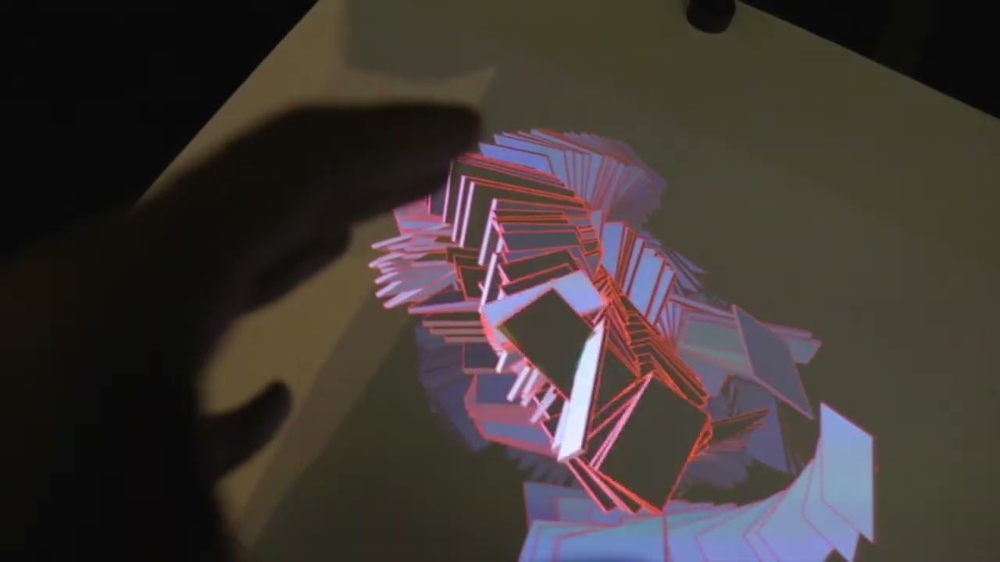
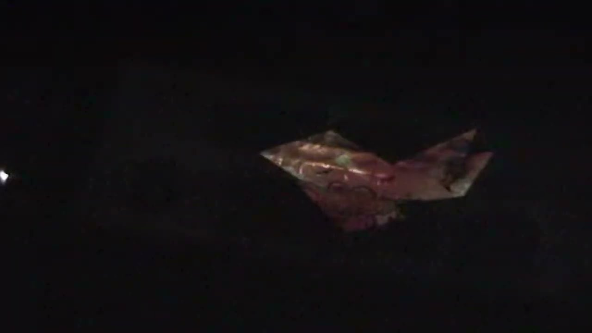
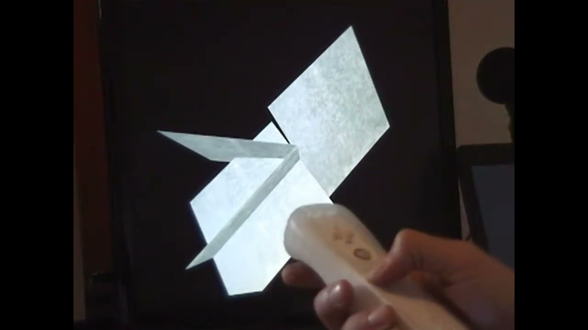

Bichos Impossíveis
Bichos Impossíveis (Impossible Animals)
Alexandre Rangel, 2008-2014Software art, homenagem à artista brasileira Lygia Clark (1920-1988).
Wikipedia Lygia Clark > Software art, homage to Brazilian artist Lygia Clark (1920-1988).
Wikipedia Lygia Clark >

Bichos Impossíveis
Exposição "ENTRECOPAS: arte brasileira 1950-2014"Curadoria: Wagner Barja
Museu Nacional da República, Brasília
Bichos Impossíveis
Exposition "ENTRECOPAS: arte brasileira 1950-2014"Curator: Wagner Barja
Museu Nacional da República, Brasília

Bichos Impossíveis - Lygiação
Projeção dos "Bichos Impossíveis", obra de computação gráfica interativa de Alexandre Rangel. O público interage com a escultura virtual com um controle remoto de vídeo game (Nintendo Wii). Reunião do grupo de estudo Lygiação, sobre a artista brasileira Lygia Clark - autora da série de esculturas interativas "Bichos".UnB, 2008
Bichos Impossíveis - Lygiação
Projection of the interactive computer graphic work "Bichos Impossíveis" (Imposible Animals), by Alexandre Rangel. The public interacts with the virtual sculpture using a video game remote control (Nintendo Wiimote). Reunion of the study group Lygiação, about the Brazilian artist Lygia Clark - creator of the interactive sculpture series "Bichos" (Animals).UnB, 2008

Protótipo do software (Blender).
Software prototype (Blender).